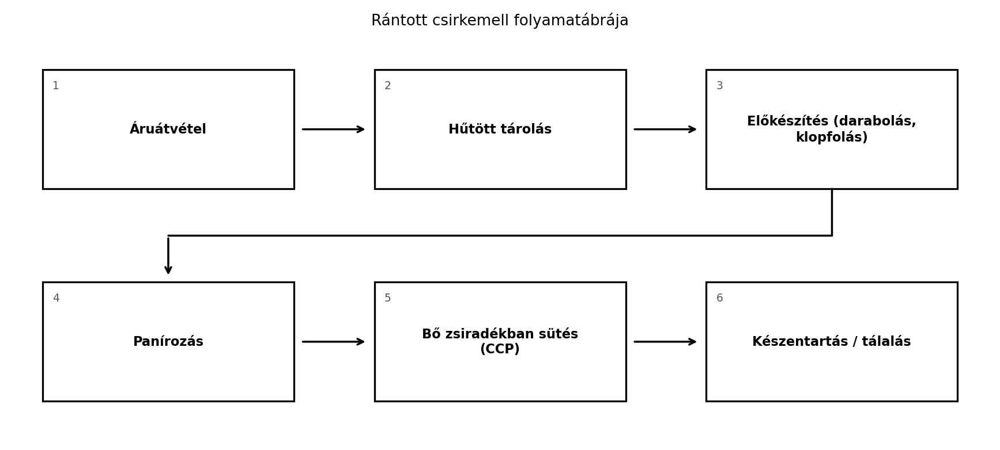

Dolgozz egy forró, zsúfolt ebédidőben. Egyszerre sül a rántott csirke, fő a rizs, készül a friss saláta. Egy vendég allergiás a tojásra, egy másik várandós. Ha nem tudod, melyik lépésben mi a valódi kockázat, és hol kell mindenképpen beavatkozni, akkor a legjobb szándékod ellenére is ételfertőzést okozhatsz. A HACCP segít abban, hogy ne a szerencsére bízd a biztonságot: előre látni a bajt, és a legfontosabb pontokon irányítani.
Képzeld el, hogy a vendéglátó üzlet egy autó. A jó minőségű alapanyag, a tiszta konyha, a betanított dolgozó – ezek a kényelmes ülések, a tükrök, a biztonsági öv. De mi akadályozza meg a balesetet, ha hirtelen fékezni kell? A fékrendszer. A HACCP a fékrendszer: megmondja, melyek a legkritikusabb pillanatok, hol kell mérni és beavatkozni ahhoz, hogy ne legyen ütközés – vagyis ne kerüljön veszélyes étel a vendég elé.
Most ezt a rendszert építjük fel lépésről lépésre.
Definíció. HACCP (Hazard Analysis and Critical Control Points). A HACCP olyan élelmiszer-biztonsági rendszer, amely a veszélyeket (biológiai, kémiai, fizikai, allergén) tudatosan elemzi, és azokon a pontokon avatkozik be, ahol a veszélyt megbízhatóan meg lehet előzni, ki lehet küszöbölni vagy elfogadható szintre lehet csökkenteni. A rendszer a termék vagy folyamat lépéseire épül, és minden lépésben felteszi a kérdést: mi romolhat el itt? A HACCP-t a Codex Alimentarius hét alapelve szerint kell felépíteni. (A magyarországi gyakorlatban a 852/2004/EK rendelet és a hazai élelmiszerlánc-törvény írja elő a HACCP-alapú eljárások alkalmazását – a pontos jogszabályi hivatkozás ellenőrizendő: hatályos jogszabályok, NÉBIH-útmutató.)
Definíció. Előfeltétel-programok (GHP – Good Hygiene Practice). Az előfeltétel-programok azok az alapvető higiéniai és működési szabályok, amelyek nélkül a HACCP nem tud működni: helyes gyártási gyakorlat, személyi higiénia, takarítás, kártevőirtás, vízellátás, hulladékkezelés, beszállítók értékelése, képzés. Ezek a programok a HACCP alapjai; a HACCP a rájuk épülő kockázatkezelés. HACCP nélkül is szükség van GHP-re, de GHP nélkül a HACCP önmagában nem elegendő.
Definíció. Veszély. Minden olyan biológiai, kémiai,
fizikai vagy allergén anyag vagy állapot, amely a fogyasztó egészségét
károsíthatja.
- Biológiai: baktériumok, vírusok, paraziták, penészgombák.
- Kémiai: tisztítószermaradék, növényvédőszer, nehézfém, nem megengedett
adalék, ételből képződő toxin.
- Fizikai: üvegszilánk, fémdarab, csontszilánk, hajszál, gyűrű.
- Allergén: a 14 jelölésköteles allergén (pl. glutén, tojás, tej,
diófélék), ha a vendég számára nem várt módon kerül az ételbe.
Definíció. Kritikus szabályozási pont (CCP – Critical Control Point). Egy olyan lépés a folyamatban, ahol a veszélyt meg lehet előzni, ki lehet küszöbölni vagy elfogadható szintre lehet csökkenteni, és ahol a felügyelet elengedhetetlen a biztonsághoz. Ha itt hibázol, a veszély valós kockázattá válik, és a kész étel biztonsága már nem állítható helyre a későbbi lépésekben. Például a baromfihús hőkezelése (sütés, főzés) CCP: ha nem éri el a biztonságos maghőmérsékletet, a túlélő kórokozók ételmérgezést okozhatnak.
Definíció. Kritikus határérték. Az a mérhető érték (hőmérséklet, idő, pH, vízaktivitás, szenzoros jellemző), amely elválasztja az elfogadható állapotot a nem elfogadhatótól egy CCP-n. Például a baromfi biztonságos maghőmérséklete (a vastagabb részben, csont nélkül) legalább 75 °C lehet (ellenőrizendő: az üzemi HACCP-tervben megadott érték; NÉBIH-útmutató; a sérülékeny csoportokra és az adott technológiára vonatkozó előírás).
Definíció. Felügyelet (monitoring). A CCP-n a kritikus határérték folyamatos vagy rendszeres mérése, megfigyelése annak ellenőrzésére, hogy a folyamat szabályozott-e. Például minden sütőből kivett hús maghőmérsékletét maghőmérővel megmérik, és az eredményt rögzítik.
Definíció. Helyesbítő tevékenység. Ha a felügyelet azt mutatja, hogy a kritikus határérték nem teljesült, azonnal be kell avatkozni: a hibás terméket vissza kell tartani, újra kell hőkezelni vagy meg kell semmisíteni; meg kell állapítani és ki kell javítani az okot; és a lépést dokumentálni. Például ha a sült csirke magja csak 65 °C, akkor a konkrét ételnek megfelelő módon (pl. sütőben, serpenyőben vagy bő zsiradékban) tovább sütik, amíg el nem éri a 75 °C-ot, és feljegyzik, mi történt.
Definíció. Igazolás (verifikáció). Annak rendszeres ellenőrzése, hogy a HACCP-rendszer a gyakorlatban is úgy működik, ahogy tervezték: a mérőeszközök hitelesek-e, a dolgozók betartják-e a lépéseket, a feljegyzések pontosak-e. Ez lehet belső audit, kalibrálás, a HACCP-terv felülvizsgálata.
Definíció. Dokumentáció. A HACCP-rendszer írásos része: a veszélyelemzés, a folyamatábra, a CCP-k táblázata, a felügyeleti és helyesbítő nyilvántartások, igazolási jegyzőkönyvek. A dokumentáció bizonyítja, hogy a rendszer él, és a hatóság ellenőrizni tudja.
Összefüggés. A GHP az alap, a HACCP a ráépülő
irányítás.
- Előfeltétel-programok nélkül a HACCP túl sok ponton lenne kritikus,
mert az alapvető higiéniai hibák (piszkos kéz, rossz takarítás,
kártevők) minden lépésben új veszélyt jelentenének.
- Ha viszont a GHP-k működnek, a HACCP csak azokat a pontokat emeli ki,
ahol a folyamat jellemzője a döntő: hőkezelés, hűtés,
készentartás.
- A konyhában ezért először a GHP-t kell rendbe tenni: kézmosás,
elkülönített tárolás, hűtőhőmérséklet, takarítási terv,
kártevő-felügyelet. Ezután lehet értelmesen veszélyelemzést
készíteni.
Példa. Ha a hűtőszekrény ajtaja nem zár jól, és a hőmérséklet 10 °C fölött van, akkor minden hűtött tárolás CCP-vé válhat, és a HACCP-terv áttekinthetetlen lesz. Előbb a hűtőt kell megjavítani (GHP), majd a hűtés mint lehetséges CCP csak ott marad, ahol a folyamatban tényleg kritikus a határérték (pl. gyors visszahűtés főzés után).
A HACCP-rendszer felépítését hét alapelv szerint végezzük. Ezeket a lépéseket minden ételre, ételcsoportra vagy folyamatra alkalmazni kell. A konyha gyakorlatában a hét alapelv így jelenik meg:
Minden folyamatlépésnél (nyersanyagátvételtől a tálalásig) feltesszük
a kérdést: milyen veszélyek (biológiai, kémiai, fizikai, allergén)
jelenhetnek meg? Melyek jelentősek? Melyeknek mekkora a valószínűsége és
a súlyossága?
- Jelentős veszély, ha előfordulása reális és súlyos egészségkárosodást
okozhat. Ilyen például a nyers baromfi bőrén jelen lévő
Salmonella, vagy a hűtetlenül tartott főtt rizsben szaporodó
Bacillus cereus.
- Nem jelentős, ha a GHP-k már kizárják (pl. megfelelő takarítás,
beszállítói minősítés). A veszélyelemzés eredményét táblázatban
rögzítik: lépés, veszély, indoklás, döntés.
Higiénia. A veszélyelemzés során mindig gondolj a sérülékeny csoportokra is: kisgyermek, várandós, idős, immunhiányos vendég. Számukra ugyanaz a kórokozó-mennyiség súlyosabb betegséget okozhat, ezért az ő ételüknél a kritikus határértékeket szigorúbban kell értelmezni (pl. teljesen átsült hús, kerülendő nyers tojásos krém).
A veszélyelemzés után minden lépésnél meg kell határozni, hogy az adott pont CCP-e. Ezt a CCP-döntési fa segít (lásd később). A döntési fa kérdései arra vezetnek: van-e későbbi lépés, amely a veszélyt biztosan megszünteti? Ha nincs, és ez a lépés a biztonság szempontjából az utolsó lehetőség a beavatkozásra, akkor CCP.
Minden CCP-hez meg kell adni egy vagy több mérhető határértéket. A
határértéknek pontosnak és a gyakorlatban mérhetőnek kell lennie:
- maghőmérséklet (°C),
- idő (perc, óra),
- pH,
- vízaktivitás,
- szenzoros jellemző (pl. a lé színe tiszta, nem véres – de ez önmagában
gyenge mérőszám, csak kiegészítésként).
A határérték forrása lehet jogszabály, NÉBIH-útmutató, szakirodalom,
üzemi kísérlet, de mindig az üzemi HACCP-tervben kell rögzíteni. Például
baromfi esetén a biztonságos maghőmérséklet legalább 75 °C
(ellenőrizendő: NÉBIH-útmutató, az adott termék és a HACCP-terv szerint;
külföldi receptben más hőmérséklet–idő pár szerepelhet).
Minden CCP-nél meg kell adni: ki, mit, hogyan, milyen gyakran mér, és
az eredményt hová írja.
- Ki: a kijelölt szakács vagy konyhai dolgozó.
- Mit: maghőmérséklet, hűtőhőmérséklet, olajhőmérséklet, idő.
- Hogyan: ellenőrzött, kalibrált maghőmérővel, adatrögzítővel, hőmérővel
a hűtőben.
- Milyen gyakran: minden egyes sütésnél, óránként, tételenként – a
kockázattól függően.
- Hová: HACCP-felügyeleti lap, konyhai napló, elektronikus rendszer.
Kritikus pont. A hőkezelés (sütés, főzés) jellemző CCP. A felügyelet során a maghőmérőt a legvastagabb részbe, csonttól és edény szélétől távol kell szúrni. Ha a maghőmérséklet nem éri el a kritikus határt, vagy a mérőeszköz nem működik, a tételt nem szabad kiadni. A mérés eredményét azonnal rögzíteni kell. (A konkrét hőmérsékleti határérték üzemenként változhat, ezért mindig az érvényes HACCP-terv az irányadó – ellenőrizendő: a HACCP-tervben megadott érték.)
Előre meg kell határozni, mi történik, ha a felügyelet azt mutatja,
hogy a kritikus határérték nem teljesült. A helyesbítés lépései:
1. A hibás tételt azonnal vissza kell tartani (nem
adható ki).
2. Meg kell állapítani az okot (pl. a sütő hőmérséklete alacsony volt, a
hús túl vastag, a hőmérő rosszul mért).
3. A hibát ki kell javítani (pl. tovább sütni, újra hűteni, a készüléket
megjavítani).
4. Az eseményt dokumentálni kell: mi történt, miért, mit tettek.
5. Ha szükséges, a hibás terméket meg kell semmisíteni.
Példa. A csirkemell maghőmérséklete 68 °C a tervezett 75 °C helyett. A szakács visszateszi a sütőbe, és 10 percen belül 75 °C-ot mér. A lapra beírja: „68 °C, újra hőkezelve, elérte a 75 °C-ot”. Ha a hús már nem menthető (pl. kihűlt, és a kritériumok nem teljesülnek), a tételt le kell selejtezni.
Azzal, hogy leírtuk a tervet, még nincs kész. Ellenőrizni kell, hogy
a HACCP-rendszer a gyakorlatban is működik:
- A maghőmérőt időszakosan kalibrálni kell (jeges-vizes keverékben 0 °C,
lobogva forró vízben kb. 100 °C – a helyi légnyomástól függően kissé
kevesebb; az eltérést a HACCP-tervben megadott tűréshatárral vetjük
össze; ellenőrizendő).
- A felügyeleti lapokat a konyhafőnök vagy a minőségért felelős
rendszeresen átnézi.
- Időnként belső auditot tartanak: megfigyelik, hogy a dolgozók tényleg
mérik-e a hőmérsékletet, betartják-e a hűtési időket.
- Ha az üzemben változás történik (új étel, új beszállító, új gép), a
HACCP-tervet felül kell vizsgálni.
Szabály. Az igazolás nem a felügyelet helyettesítője. A felügyelet a CCP-n folyamatosan, az igazolás pedig időszakosan ellenőrzi a rendszert.
A HACCP-rendszerről írásos dokumentációnak kell készülnie:
- Veszélyelemzési táblázat, folyamatábra, CCP-k meghatározása, kritikus
határértékek, felügyeleti és helyesbítő eljárások.
- Üzemi feljegyzések: hőmérsékleti naplók, hűtő ellenőrző lap,
takarítási lista, képzési nyilvántartás.
- A dokumentációt naprakészen kell tartani, és a hatósági ellenőrzés
során be kell mutatni.
A pontos nyilvántartás nem bürokrácia: ha egy vendég panaszkodik, a
lapok megmutatják, mit mértünk, mikor, ki, és mit tettünk. Ez védi a
vendéget és a konyhát is.
A HACCP alapja a folyamat lépéseinek pontos ábrázolása. A
folyamatábra segít átlátni, hol lehet veszély, és hol kell CCP-t
keresni. A folyamatábra készítésének lépései:
1. Határozd meg a terméket (pl. „rántott csirkemell,
hasábburgonyával”).
2. Sorold fel a lépéseket a nyersanyag fogadásától a tálalásig:
áruátvétel, tárolás, előkészítés, panírozás, sütés, hűtés/készentartás,
tálalás.
3. Rajzold le folyamatábrán nyilakkal.
4. A helyszínen ellenőrizd, hogy a rajz valóban a tényleges folyamatot
mutatja (ne azt, amit gondolsz, hogy csinálnak).
5. Minden lépéshez rendeld hozzá a bemenő nyersanyagot, eszközt, és a
keletkező terméket.
Megjegyzés. A folyamatábra lehet egyszerű, de pontos. Nem kell bonyolult szoftver: kézzel vagy táblázatkezelővel is elkészíthető. A lényeg, hogy a konyhai dolgozók is felismerjék benne a saját munkájukat.
A következő diagram egy egyszerű folyamatábra, amely a rántott csirkemell készítésének fő lépéseit mutatja:

Kritikus pont. A folyamatábrán a sütés lépést CCP-ként jelöljük, mert itt lehet a Salmonella és más kórokozók számát a hőkezelés megbízhatóan csökkenteni. A panírozás nem CCP, de a nyers csirke és a panírmorzsa közötti keresztszennyeződést GHP-vel (külön eszközök, kézmosás, azonnali hőkezelés) kell kezelni.
A döntési fa kérdések sorozata, amellyel minden folyamatlépésnél eldönthető, hogy az adott lépés CCP-e. A kérdéseket sorban, minden lépésre végig kell gondolni. (A döntési fa formája a Codex Alimentarius szerint, a hazai gyakorlatban a NÉBIH-útmutatókban is megtalálható – a konkrét rajz és kérdésmegfogalmazás ellenőrizendő.)
Egyszerűsített döntési fa:
1. kérdés: Vannak-e megelőző intézkedések erre a
veszélyre?
- Ha nincs, és a veszély jelentős, akkor a lépést módosítani kell, vagy
a terméket biztonságosabban kell kialakítani.
- Ha igen, menj a 2. kérdéshez.
2. kérdés: Ezt a lépést kifejezetten arra tervezték,
hogy a veszélyt megszüntesse vagy elfogadható szintre csökkentse?
- Ha igen, akkor CCP.
- Ha nem, menj a 3. kérdéshez.
3. kérdés: Előfordulhat-e a veszély ezen a lépésen,
vagy nőhet-e elfogadhatatlan szintre?
- Ha nem, nem CCP.
- Ha igen, menj a 4. kérdéshez.
4. kérdés: Van-e későbbi lépés a folyamatban, amely
ezt a veszélyt biztosan megszünteti vagy elfogadható szintre
csökkenti?
- Ha igen, ez a lépés nem CCP, mert később úgyis kezeljük.
- Ha nincs, akkor ez a lépés CCP.
A négy kérdés nem egyenes sor, hanem elágazó fa: a 2. és a 4. kérdés „CCP” végre vezethet, a 3. és a 4. kérdés „nem CCP” végre, az 1. kérdés „nem” ága pedig a lépés vagy a termék módosítására. Az ábra a fát és alatta a kidolgozott példa (rántott csirkemell) hat lépésének eredményét mutatja; egyetlen lépés, a sütés jut el a vastag keretes „CCP” dobozig.
Figyeld meg, hogy a „nem CCP” nem azt jelenti, hogy a lépéssel nincs teendő: ott a veszélyt az előfeltétel-programok (GHP) kezelik. A HTML-kiadásban a hat lépés gombjával végigjárhatod a fát: a piros vonal mutatja a bejárt utat, alatta a fejezet indoklása olvasható.
Megjegyzés. A döntési fát mindig a jelentős veszélyekre alkalmazzuk. Ha egy lépés a GHP-k miatt már kielégítően szabályozott, nem kell CCP-vé minősíteni. Például a hűtőtárolás általában GHP, nem CCP, mert a hűtő hőmérsékletét folyamatosan ellenőrizzük, de nem minden egyes tárolási lépésnél kell CCP-t kijelölni. Ugyanakkor ha a hűtés a biztonság szempontjából az utolsó lehetőség (pl. gyors visszahűtés főzés után), akkor lehet CCP.
Helyzet. Tankonyhánkban rántott csirkemellet készítünk. A nyers csirkemell ismert módon hordozhat Salmonella baktériumot. A panírozás után bő zsiradékban sütjük, majd azonnal tálaljuk. A folyamatábrát fentebb láttuk. Most lépésenként elvégezzük a veszélyelemzést és a döntési fa alkalmazását.
Összegzés a példából. A rántott csirkemell folyamatában egyetlen CCP-t jelölünk: a bő zsiradékban sütést. A többi lépésnél a veszélyt a GHP-k kezelik. Ezt a döntést a folyamatábra és a döntési fa alapján hozzuk meg. Minden üzemben a helyi adottságoktól függően lehet eltérés, ezért a HACCP-tervet mindig az adott konyhára kell szabni.
Kritikus pont. – Rántott csirkemell hőkezelése
Biztonsági korlát. Ezt a mérést tankonyhán vagy üzemben, tanári felügyelettel gyakorold; a maghőmérő használata előtt fertőtlenítsd a szúrószárat.
A HACCP-rendszer működését nemcsak a termék, hanem a folyamat
oldaláról is ellenőrizni kell. A minőségellenőrzés itt kettős:
1. A termék minősége: a kész étel érzékszervi jellemzői (szín, állag,
íz, illat, forma) és mérhető paraméterei (adagsúly,
maghőmérséklet).
2. A rendszer minősége: a felügyeleti lapok pontossága, a mérőeszközök
hitelessége, a dolgozók betartják-e a kritikus határértékeket, és a
helyesbítések megtörténtek-e.
Az igazolás során a konyhafőnök vagy a minőségért felelős például véletlenszerűen kiválaszt egy napot, és átnézi a hőkezelési naplót, a hűtő hőmérsékleti adatait. Ha hiányosak, intézkedik.
Hiba 1: A HACCP-terv csak papíron létezik.
- Tünet: a felügyeleti lapok üresek vagy hónapokkal korábban töltötték
ki; a dolgozók nem tudják, mi a CCP.
- Ok: a vezetés nem képzi ki a dolgozókat, nem ellenőrzi a
rendszert.
- Helyes gyakorlat: rendszeres képzés, a lapok naprakész kitöltése, a
vezetői ellenőrzés beiktatása.
Hiba 2: A kritikus határértéket nem mérik, csak „ránézésre”
döntik el.
- Tünet: a csirkét érzésre sütik, a maghőmérőt nem használják.
- Ok: nincs elérhető kalibrált hőmérő, vagy a dolgozó nem érti a
jelentőségét.
- Helyes gyakorlat: minden hőkezelő CCP-n legyen mérőeszköz, és a mérés
kötelező.
Hiba 3: Helyesbítés helyett a hibát
eltussolják.
- Tünet: a hús alacsony maghőmérséklete után mégis kiadják az ételt,
remélve, hogy nem lesz baj.
- Ok: időnyomás, hibáztatástól való félelem.
- Helyes gyakorlat: a helyesbítő tevékenység a HACCP része, nem hiba; a
visszatartott tételt újra kell kezelni vagy selejtezni, és
dokumentálni.
Esemény. Egy konyhán a sütőtér tele volt, és egy
nagyobb adag rántott csirkemellet a szokottnál rövidebb ideig sütöttek.
A szakács a gyorsaság kedvéért nem szúrta bele a maghőmérőt, csak
megnézte a panír színét. Az egyik vendég – egy idős hölgy – másnap
reggelre lázzal, hasmenéssel és hányással kórházba került (a
Salmonella lappangási ideje jellemzően fél naptól három napig
tart; ellenőrizendő: mikrobiológiai tankönyv / NNGYK). A vizsgálat
szerint a csirkemell több darabjában nem érte el a 75 °C-ot, és
Salmonella maradt benne.
Tanulság. A panír színe nem helyettesíti a
maghőmérséklet mérését. Ha a szakács méri a hőmérsékletet, és a kritikus
határ alatt találja, visszateszi a sütőbe – ezzel megelőzhető a
megbetegedés. A HACCP azért előírás, mert az ilyen hibákat kizárja.
Írd le a HACCP hét alapelvét egy mondatban mindegyikről. (A megoldásban teljes mondatok szerepeljenek.)
Egy konyhán a folyamatábrán a következő lépések vannak: nyers csirke átvétele, hűtőtárolás, darabolás, pácolás, grillezés, tálalás. Melyik lépés lehet CCP? Válaszodat egy mondatban indokold.
Készíts egyszerű döntési fát a következő veszélyre: a salátán a mosás elhagyása miatt földmaradék (fizikai szennyeződés) és a talajból származó kórokozók (biológiai veszély) maradhatnak. A salátát folyó ivóvízben mossák, majd azonnal tálalják. Kérdések a döntési fából: van-e későbbi lépés, amely a veszélyt megszünteti? Mi a döntés: CCP vagy sem? Indokold.
Egy üzemi HACCP-tervben a hűtőtárolást CCP-nek jelölték, mert a beszállított friss hal nagyon érzékeny. A kritikus határ: a hűtőtér hőmérséklete ≤ 5 °C, a friss halnál szigorúbban ≤ 2 °C (ellenőrizendő: NÉBIH-útmutató / hatályos rendelet / HACCP-terv). A felügyelet óránkénti hőmérséklet-ellenőrzés. Írj egy helyesbítő tevékenységet arra az esetre, ha a hőmérséklet 7 °C-ra emelkedik.
Tervezd meg egy hidegen tálalt tonhalsaláta HACCP-rendszerét: sorold fel a fő lépéseket, végezz rövid veszélyelemzést (milyen veszélyek lehetnek), jelöld ki a CCP-ket (ha vannak), és indokold. A tonhal konzerv, a majonéz házilag készült tojássárgájából, a zöldségek nyersen, a salátát azonnal fogyasztják.
Figyeld meg a tankonyhában a rántott csirkemell készítését. Készíts egy rövid folyamatábrát, és a gyakorlatban ellenőrizd, hogy a szakács valóban méri-e a maghőmérsékletet. Ha nem, írd le, miért veszélyes, és javasolj megoldást.
A grillezés lehet CCP, mert ez az a hőkezelési lépés, ahol a nyers csirke kórokozói elpusztíthatók. A többi lépés esetében a veszélyt a GHP kezeli, vagy a hőkezelés később úgyis megszünteti. (Megjegyzés: ha a pácolás során nyers csirkéből csepegő lé keresztszennyeződést okoz, azt GHP-vel kell kezelni.)
Döntési fa kérdései:
- 1. kérdés: Van-e megelőző intézkedés? Igen: a saláta mosása.
- 2. kérdés: Ezt a lépést kifejezetten a veszély megszüntetésére
tervezték? Igen, a mosás a látható földmaradék (fizikai szennyeződés)
eltávolítására szolgál, a talajból származó kórokozók számát csak
csökkenti.
Döntés két ágon. a) Ha a HACCP-terv fertőtlenítő mosást ír elő mérhető
koncentrációval és behatási idővel, a mosás CCP. b) Ha csak ivóvizes
mosás van, a lépést előfeltétel-programként (GHP) kezeljük, mert nincs
mérhető kritikus határ (a veszélyt a jelentős veszélyek szűrőjével
indokoljuk, lásd az előkészítés lépését). A gyakorlatban a legtöbb
konyha a b) ágat követi: írásos mosási utasítás, ivóvíz, folyó víz,
szükség esetén engedélyezett zöldségfertőtlenítő a gyártói
koncentrációval, mert nincs folyamatosan mérhető kritikus határ (a
„látható földmaradék nélkül” nem mérhető érték). Ha a HACCP-terv mégis
CCP-nek jelöli, a kritikus határ mérhető paraméter legyen (pl. a
fertőtlenítőszer koncentrációja és behatási ideje; ellenőrizendő:
HACCP-terv, gyártói adatlap).
Helyesbítő tevékenység: ha a hűtőtér hőmérséklete 7 °C, azonnal ellenőrizni kell a hűtőberendezést (ajtó záródása, kompresszor, hűtőközeg). A hal tételt át kell helyezni egy működő hűtőbe, ha a hőmérséklet tovább emelkedik. A hibás hűtőt ki kell vonni a használatból, javíttatni. Az eseményt dokumentálni kell, és ha a hal minősége romlott, le kell selejtezni. A kritikus határ újbóli ellenőrzése után lehet folytatni a munkát.
Folyamat: nyersanyagátvétel (konzerv tonhal, tojás,
zöldség), tárolás, zöldség előkészítés (mosás, darabolás), majonéz
készítés (tojássárgája, olaj, mustár, citromlé), keverés, hűtve tárolás,
tálalás.
Veszélyelemzés:
- Biológiai: a nyers tojás Salmonella kockázatot hordozhat a
majonézben; a zöldségek talajszennyezése; a konzerv tonhalban
Clostridium botulinum elvileg lehet, de a jó minőségű, ép
konzerv esetén a kockázat alacsony.
- Kémiai: hisztamin (scombrotoxin): a tonhal a hisztamint képző halak
közé tartozik, a nem megfelelően hűtött hal vagy felbontott konzerv,
illetve a kész saláta szobahőn tartása növeli; kezelés: beszállítói
megfelelőség, felbontás után hűtve tárolás (ellenőrizendő: HACCP-terv).
Emellett a tisztítószer-maradék (GHP).
- Fizikai: tojáshéj-darabok, csontdarabok a halból.
- Allergén: tojás (majonéz), mustár.
CCP-k:
- A majonéz készítése lehet CCP, ha nyers tojást használunk, mert a
Salmonella itt nem pusztul el, és nincs későbbi hőkezelés.
Kritikus határ lehet például: csak pasztőrözött tojásból készült
alapanyagot használunk. A savanyítás (pH) csak lassítja a szaporodást, a
nyers tojás kockázatát nem szünteti meg megbízhatóan, ezért sérülékeny
csoportnak csak pasztőrözött tojásból készült majonéz adható
(ellenőrizendő: HACCP-terv). Ha a majonézt pasztőrözött tojásból
készítjük, vagy hőkezeljük, akkor a CCP megszűnhet, mert a kockázatot a
GHP és a beszállítói minősítés kezeli.
- A hűtve tárolás CCP lehet, mert a hidegen fogyasztott salátában a
szaporodást csak a hideg lánc akadályozza meg. Kritikus határ:
legfeljebb 5 °C (ellenőrizendő: HACCP-terv).
A gyakorlatban a legtöbb üzem pasztőrözött tojást vagy kész majonézt
használ, ezzel a nyers tojás CCP-t kiküszöböli. A feladat célja
megmutatni, hogy a HACCP-tervet az adott recept és alapanyag határozza
meg.
A megoldásnak tartalmaznia kell: a folyamatábra lépéseit, a maghőmérés szükségességét, és ha a szakács nem méri, hogy miért hibás (a panír színe nem jelzi a belső hőmérsékletet; a 75 °C-os maghőmérséklet a Salmonella elleni biztonság). Javaslat: tegyünk ki jól láthatóan maghőmérőt, vezessünk be kötelező mérési pontot, és a lapok kitöltését a konyhafőnök ellenőrizze.
A HACCP olyan élelmiszer-biztonsági rendszer, amely a veszélyeket (biológiai, kémiai, fizikai, allergén) elemzi, és a kritikus szabályozási pontokon (CCP) avatkozik be. Alapja az előfeltétel-program (GHP), amely a higiéniai és működési feltételeket biztosítja. A HACCP hét alapelve: 1. veszélyelemzés, 2. CCP-k meghatározása, 3. kritikus határértékek, 4. felügyeleti eljárások, 5. helyesbítő tevékenységek, 6. igazolási eljárások, 7. dokumentáció. A veszélyelemzés során minden folyamatlépést megvizsgálunk, és a CCP-döntési fát alkalmazzuk: ha a lépés az utolsó lehetőség a veszély megelőzésére, és nincs későbbi lépés, amely megszüntetné, akkor CCP. A CCP-hez mérhető kritikus határértéket rendelünk (pl. baromfi maghőmérséklete ≥ 75 °C – ellenőrizendő az üzemi HACCP-tervben), és meghatározzuk a felügyeletet és a helyesbítést. A dokumentáció bizonyítja, hogy a rendszer működik. A HACCP és a CCP-k gyakorlati alkalmazását tovább vizsgáljuk a Kritikus pontok a konyhán alfejezetben.
Megjegyzés. A példák tanulási célúak; az üzemi gyakorlatban a saját HACCP-terv, a hatályos jogszabályok és a NÉBIH-útmutatók az irányadók.